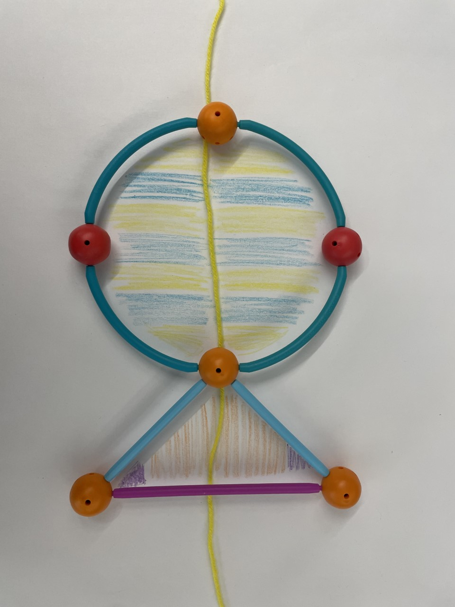

Extend Yourself - Geometric Shapes: Symmetry in Our World
 Construct Your Own Design
Construct Your Own Design
Now it is your turn to be creative. We have spent time looking at designs that occur in the world. Now you get to experiment with the Geometric Shapes building kit and create any design that has at least one line of symmetry. This design could exist in the real world or not. The choice is yours! After you create your design, identify the line(s) of symmetry.
Construct Objects with Patterns
Research other real-world objects that have at least one line of symmetry but also contain patterns as well. Some ideas in nature include plants, peacock feathers, and butterflies.
After you identify your object in our world, use the Geometric Shapes building kit to construct the outline of it. Then, on paper, sketch the outline you just created using the shapes. Identify the line(s) of symmetry and add detail by drawing and adding color to create the pattern that exists for these objects.

Building Symmetry
Many buildings in the world use symmetry in their design including houses, office buildings, and even famous buildings all around the world. A few examples include the Taj Mahal, the Eiffel Tower, and even the White House. Use the Geometric Shapes building kit to construct a 3D building that has symmetry. Once you build it, identify the lines of symmetry present.